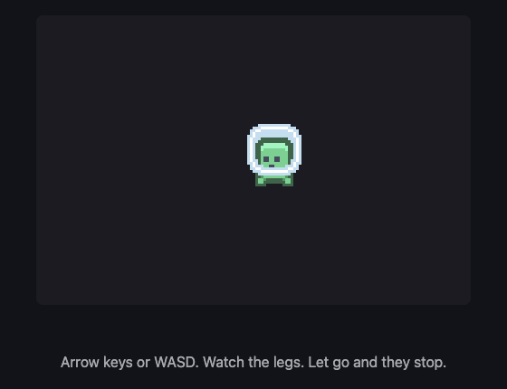

A14: Your Monster
Your player has been a coloured square since A10. By the end of this step it is a monster, and when you walk it the legs move. When you stop, they stop.
Needs: A10. Gives you: a drawn character, cut out of one picture file, that animates while it walks.
The whole game, and today's piece
keys, touches"] --> D["Decide
where everything is"] --> R["Draw
the screen"] end R -. "and again" .-> N S["Remember
your game"] --> D O["Other people"] --> D F["The fight"] --> D W["The world
walls, map"] --> R A["Sound"] --> R classDef now fill:#8a5a00,stroke:#ffc46b,color:#fff,stroke-width:3px classDef done fill:#2f6f4f,stroke:#8fd6b4,color:#fff class N,D,S,O done class R now
Only Draw changes. "Notice" and "Decide" are untouched — the monster moves for exactly the same reason the square did.
Cutting it into blocks
"A monster whose legs move" sounds like one thing. It is two:
- Cut — take one small picture out of one big picture file
- Change — pick a different small picture as time passes
Why bother splitting it? Because if it were one lump and it went wrong, you could not tell which part was wrong. Nothing on screen at all is a cutting problem — wrong file, wrong rectangle. A monster that appears but never animates is a changing problem — the timer, or the list of pictures. Those are two different bugs, and from the outside both of them just look like "the monster is broken".
The picture file
Everything the monster needs is in one file: vendor/kenney/pixel-platformer-characters.png. It is 216 pixels wide and 72 tall, and inside it are 27 small pictures in a grid — 9 across, 3 down, each one 24 by 24 pixels.
The first two pictures are the same green monster twice. In picture 0 its legs are together. In picture 1 they are apart. That is all a walk needs.
One honest warning. This character is drawn in a 24-pixel style, and the walls and floors you will use in A16 are drawn in a 16-pixel style by a different artist. Side by side they do not quite match — the monster's pixels are slightly bigger than the world's pixels. We chose that on purpose, because no pack we could find had both a matching world and a character that walks. Small real projects end up mixing packs like this all the time. If it bothers you later, the fix is to pick one style and redraw the other, and that is a real afternoon of work, not a line of code.
Block 1: Cut
const sheet = new Image();
sheet.src = '../../vendor/kenney/pixel-platformer-characters.png';
const CELL = 24; // one picture in the sheet, in pixels
const COLS = 9; // pictures across the sheet
const ZOOM = 3; // draw it three times as big
const SIZE = CELL * ZOOM; // 72 pixels on screen
function drawPicture(n, x, y) {
const sx = (n % COLS) * CELL;
const sy = Math.floor(n / COLS) * CELL;
ctx.drawImage(sheet, sx, sy, CELL, CELL, x, y, SIZE, SIZE);
}
drawImage with nine things after it looks frightening. It is really two rectangles and a question.
- The first is the file.
- The next four —
sx, sy, CELL, CELL— are which little square to copy out of the big picture: how far from its left, how far from its top, how wide, how tall. - The last four —
x, y, SIZE, SIZE— are where to paste it on the canvas, and how big to make it there.
Copy from there, paste to here. That is the whole nine.
Finding sx and sy is division. Picture 0 is at the start. Picture 9 is one row down, because there are 9 across. So n % COLS is how far along the row you are, and Math.floor(n / COLS) is which row. Multiply each by 24 and you have the corner of the picture.
Two more lines matter:
ctx.imageSmoothingEnabled = false;
24 pixels is tiny on a modern screen, so we draw at 3 times the size. When a browser makes a picture bigger it normally blurs it, to make photographs look smooth. On pixel art that turns crisp squares into mush. Turning smoothing off tells the browser to make each pixel into a solid 3-by-3 block instead. Try it both ways once — the difference is the whole look of the game.
Block 2: Change
const STAND = 0;
const WALK = [0, 1];
const STEP = 0.14; // seconds each picture stays up
let walked = 0; // seconds spent walking
let frame = STAND; // which picture to draw right now
function animate(dt, moving) {
if (!moving) {
walked = 0;
frame = STAND;
return;
}
walked += dt;
frame = WALK[Math.floor(walked / STEP) % WALK.length];
}
A frame is one picture of an animation. WALK is the list of frames the walk is made of, in order.
Read the important line backwards. walked counts up in seconds while you hold a direction. Divide by STEP and you get "how many pictures have gone by since you started walking" — after 0.28 seconds, two. Math.floor throws away the part after the dot. % WALK.length wraps that number back to the start of the list, so 0, 1, 2, 3, 4 becomes 0, 1, 0, 1, 0.
So the picture you see is worked out from the clock. You do not tell the animation to advance; you ask it what it looks like right now. Frames are data with time as the index. Nothing anywhere counts frames by hand, which means nothing can drift out of step.
And when you are not moving, walked goes back to zero and the frame is STAND. Legs stop. That one if is the difference between a monster and a monster having a fit.
Then update ends with one line:
animate(dt, dx !== 0 || dy !== 0);
"Moving" simply means a direction was pressed. update already knows that, so nothing new has to be noticed.
Why we did it this way
The forcing constraint is that A12 puts other people on your screen. Another player's monster is drawn from the same sheet, but it walks at different moments to yours. Because drawPicture takes a picture number and a place, and animate keeps its counting in plain numbers, a second monster needs a second walked and nothing else. Nothing about cutting or changing knows the word "player".
What we could have done instead
| Instead of this | What it would cost |
|---|---|
| One image file per frame | The browser asks the server for every single file, one at a time, and they arrive whenever they arrive. Your monster can animate with holes in it while it waits. Twenty characters would be a hundred files |
| Advancing the frame once per loop, with no clock | Your monster's legs would move at whatever speed the screen refreshes. On a 144-times-a-second screen they blur; on a slow one they crawl. Same bug as forgetting dt in A10 |
HTML <img> elements moved around with CSS |
It works for one monster. Then you add fifty and ask the browser to lay out a whole page sixty times a second, which is not what page layout is for |
| Drawing at the real 24 pixels, with no zoom | Your monster would be smaller than this letter o on most screens. Zooming without turning smoothing off is worse: a blurry small monster |
The prompt
I have a plain JavaScript canvas game. main.js has a Set of held keys, an
update(dt) that changes player.x and player.y, and a draw() that paints a
rectangle for the player. Replace the rectangle with a sprite from a single
sprite sheet at ../../vendor/kenney/pixel-platformer-characters.png, which is
216x72 with 24x24 cells, 9 per row, no gaps. Cell 0 is the character with legs
together and cell 1 with legs apart. Draw it at 3x with smoothing off. Add a
two-frame walk animation that advances on a timer measured in seconds and
holds a single standing frame when no direction is held. Keep the cutting code
and the animation code in separate functions.
Check the output for: does the frame advance from dt, or does it advance once per call with no clock? Assistants very often write frame++ inside the loop, which looks perfect on their screen and runs at the wrong speed on yours. Does it reset to the standing frame when you let go, or keep the legs moving forever? And did it turn imageSmoothingEnabled off — this is the single most forgotten line in pixel-art code, and the result is not an error message, just a soft blurry mess you might blame on the artist.
See it work

Open the page with Live Server and:
- The monster appears straight away. If you get nothing, the file path is wrong — check the browser's network list before you touch any code.
- Hold the right arrow. We read the frame number back fourteen times while it walked and got
0,0,0,1,1,0,0,0,1,1,0,0,0,1. It really is swapping pictures, roughly seven times a second. - Let go. We read it six more times and got
0,0,0,0,0,0. The legs are still, and they stay still. - While it walked, its position went from
x: 200tox: 312. Moving and animating are two separate things happening at once, and each one can be checked on its own. - Look closely at the edges of the monster. The pixels are hard squares, not soft edges. That is smoothing being off.
Put it in the game
Take the game from A10. Add the sheet image, drawPicture and animate. Add one line to the end of update:
animate(dt, dx !== 0 || dy !== 0);
Then in draw, replace this:
ctx.fillStyle = '#7ee081';
ctx.fillRect(player.x, player.y, SIZE, SIZE);
with this:
drawPicture(frame, Math.round(player.x), Math.round(player.y));
Math.round is there because player.x is usually something like 216.656. Drawing pixel art at half a pixel makes its edges shimmer as it moves.
Key Takeaways
- One image file can hold hundreds of pictures; you cut out the one you want with a rectangle
drawImage's nine numbers are just "copy from this square" and "paste to this square"- An animation is a list of pictures, and the clock decides which one you are on
- Stopping the animation when the player stops is what makes it look alive instead of broken
- Turn smoothing off and round your positions, or pixel art goes soft and shimmery
One file, one request from the server, twenty-seven pictures. That is why sheets like this exist. Grown-up programmers call this a sprite atlas — an atlas is a book of maps, and this is a book of pictures. Now you know that word too.
Your turn
Your monster walks to the left looking exactly the same as when it walks to the right. Make it face the way it is going.
You need to remember the last sideways direction, and then flip the picture when you draw it. Look up ctx.scale(-1, 1) and ctx.save() / ctx.restore(). Flipping is one of those things that feels impossible until you have done it once, and then takes four lines forever after.